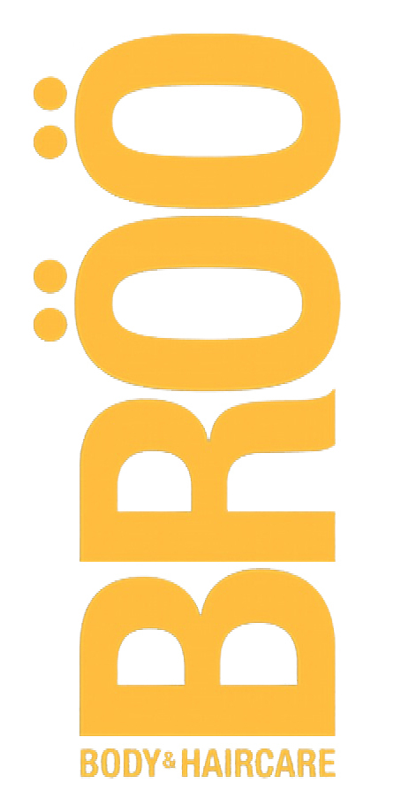

Buyer's Dashboard For Retailers


I.P.A. Shampoo
BENEFITS: Go from FRIZZY to SLEEK instantly! Sulfate-free
Color-friendly
pH-balanced
Silicone-free
Sodium Chloride-free (gentle on chemically straightened hair)
100% Vegan
Lathers like no other natural shampoo
SCENT: Exotic notes of cinnamon, ginger and cardamom, with a delicate, sweet, creamy finish.
OUR RECIPE: Pop the top on a microbrewed India Pale Ale, with extra essential hops oils to NOURISH Add an intense shot of BRÖÖLuxe, our revolutionary natural alternative to silicone to leave hair SMOOTH and SLEEK BÖÖST with Sweet Almond Oil to TAME FRIZZ Blend with our unique mix of 3 gentle, sulfate-free cleansers
Serve up for a silky Smooth Finish!
HOW TO USE: Shake Pour. Lather. Rinse. Enjoy Responsibly! NO you can’t drink it!
Pale Ale Shampoo
BENEFITS: Go from FLAT to FULL instantly!
Sulfate-free
Color-friendly
pH-balanced
Silicone-free
Sodium Chloride-free (gentle on chemically straightened hair)
100% Vegan
Lathers like no other natural shampoo
SCENT: Energizing notes of citrus, ginger, and lemongrass with a subtle malt finish OUR
RECIPE: Pop the top on a microbrewed American Pale Ale, with vitamin-and-mineral-rich malted barley for STRENGTH Add a light shot of BRÖÖLuxe, our revolutionary natural alternative to silicone for WEIGHTLESS GLOSS & DETANGLING BÖÖST with Barley Protein for BODY Blend with our unique mix of 3 gentle, sulfate-free cleansers Serve up for an amazing Head of Volume!
HOW TO USE: Shake. Pour. Lather. Rinse. Enjoy Responsibly! NO you can’t drink it!
Porter Shampoo
BENEFITS: Go from DRY to DRENCHED instantly!
Sulfate-free
Color-friendly
pH-balanced
Silicone-free
Sodium Chloride-free (gentle on chemically straightened hair)
100% Vegan
Lathers like no other natural shampoo
SCENT: Delicious vanilla, toffee, and caramel notes, with a subtle chocolate and coconut finish
OUR RECIPE: Pop the top on a microbrewed Oatmeal Porter, with real oatmeal, to SOOTHE Add a medium shot of BRÖÖLuxe, our revolutionary natural alternative to silicone to MAINTAIN MOISTURE BÖÖST with Shea Butter to HYDRATE & SOFTEN Blend with our unique mix of 3 gentle, sulfate-free cleansers Serve up for a quenching Hydration Libation!
HOW TO USE: Shake. Pour. Lather. Rinse. Enjoy Responsibly! NO you can’t drink it!
I.P.A. Conditioner
BENEFITS: Go from FRIZZY to SLEEK instantly! Sulfate-free
Color-friendly
pH-balanced
Silicone-free
Sodium Chloride-free (gentle on chemically straightened hair)
100% Vegan
Lathers like no other natural shampoo
SCENT: Exotic notes of cinnamon, ginger and cardamom, with a delicate, sweet, creamy finish.
OUR RECIPE:
Pop the top on a microbrewed India Pale Ale, with extra essential hops oils to NOURISH
Add an intense shot of BRÖÖLuxe, our revolutionary natural alternative to silicone to leave hair SMOOTH and SLEEK BÖÖST with Sweet Almond Oil to TAME FRIZZ Blend with our unique mix of 3 gentle, sulfate-free cleansers
Serve up for a silky Smooth Finish!HOW TO USE: Shake Pour. Lather. Rinse. Enjoy Responsibly! NO you can’t drink it!
Porter Conditioner
BENEFITS: Go from DRY to DRENCHED instantly!
Sulfate-free
Color-friendly
pH-balanced
Silicone-free
Sodium Chloride-free (gentle on chemically straightened hair)
100% Vegan
Lathers like no other natural shampoo
SCENT:Delicious vanilla, toffee, and caramel notes, with a subtle chocolate and coconut finish
OUR RECIPE:
Pop the top on a microbrewed Oatmeal Porter, with real oatmeal, to SOOTHE
Add a medium shot of BRÖÖLuxe, our revolutionary natural alternative to silicone to MAINTAIN MOISTURE BÖÖST with Shea Butter to HYDRATE & SOFTEN Blend with our unique mix of rich, silicone-free conditioners Serve up for a quenching Hydration Libation!
HOW TO USE: Shake Pour. Lather. Rinse. Enjoy Responsibly! NO you can’t drink it!
Pale Ale Conditioner
BENEFITS: Go from FLAT to FULL instantly!
Sulfate-free
Color-friendly
pH-balanced
Silicone-free
Sodium Chloride-free (gentle on chemically straightened hair)
100% Vegan
Lathers like no other natural shampoo
SCENT: Energizing notes of citrus, ginger, and lemongrass with a subtle malt finish
OUR RECIPE:
Pop the top on a microbrewed American Pale Ale, with vitamin-and-mineral-rich malted barley for STRENGTH Add a light shot of BRÖÖLuxe, our revolutionary natural alternative to silicone for WEIGHTLESS GLOSS DETANGLING BÖÖST with Barley Protein for BODY Blend with our unique mix of rich, silicone-free conditioners Serve up for an amazing Head of Volume!
Serve up for a silky Smooth Finish!
HOW TO USE: Shake Pour. Lather. Rinse. Enjoy Responsibly! NO you can’t drink it!
OUR PHILOSOPHY
At BRÖÖ, we search out home-brewed beauty remedies, handed down through the ages, and transform them into ultra-performing, natural beauty products that you’ll love. It’s a never-ending journey, and this is how it all began.OUR HISTORY
BRÖÖ was born from a dog bite. Seriously! The day before BRÖÖ’s founders, Brad and Sarah, were to move to Asheville, a stray dog bit Brad. After two weeks in the hospital, and a month on intravenous antibiotics, Brad finally started listening to Sarah about how he had to take better care of his health (or Sarah was going to kill him). Brad agreed to eat healthy food, but, when Sarah brought home natural shampoos, he started pulling his hair out. Where was the lather? Where was the de-tangling? Where was the fun? In desperation, he called his mom, and told her his sorrowful tale of natural hair despair. Her response? Beer! Not to drown his sorrows. Rather, to brew his do’!Back in college in the 50’s, his mom and all her friends had poured beer on their hair for natural body and shine. But, when Brad told Sarah about this malted miracle, she wrinkled her nose, saying, “I don’t want to smell like a fraternity house on Sunday morning.” Sarah mentioned this hopped-up, hair-brained idea to her mother, who promptly informed her that while in medical school in the Philippines back in the 50’s, she too had practiced the fine art of “beer hair.” Slowly, Sarah began to open her mind (while Brad opened a beer).
With the help of both of their mothers, Brad convinced Sarah to take a bottle of local, handcrafted beer from Asheville into the shower (surmising that, if canned 1950’s beer was good for the moms, then rich, full-bodied micro-brewed Asheville beer must be even better for his wife.) Suddenly, a blast of brilliant white light shot out from under the bathroom door! Sarah emerged with shiny, silky, flowing tresses. She was a convert to “beer hair.”
Soon, the Pearsall shower looked like a bar, with empty bottles of every Asheville- brewed beer piled in the corners. Lushes? No, luscious! Brad was often mistaken for Fabio (minus the chiseled chin and pecs) and Sarah was whipping her hair back and forth at anyone who glanced her way. But, sadly, the daily dose of “beer hair” was cold (and expensive!) Knowing Sarah’s prior preference for salon-grade products, Brad remarked that if they could somehow magically blend handcrafted beer into salon-level shampoo, they’d have exactly what they wanted. And that’s what started their two-year quest to BRÖÖ their DO.
With a nod to Belgium and Germany (those über beer capitals, worshipped by the U.S. craft beer movement), they chose the name BRÖÖ for this Holy Grail: A shampoo made with ale. And, without a bit of chemistry knowledge between them, the journey began, to take beer “from the Saloon to the Salon!”
Sarah threw down an early gauntlet. BRÖÖ had to be clean, with no nasty chemical junk and had to meet the highest standards in the natural marketplace. Brad just wanted some lather.
They tried brewing their own beer, but it was more epic fail, than epic ale. They decided to leave it to the experts at Asheville’s original craft brewery, Highland Brewing. Highland’s St. Terese’s Pale Ale became the founding ingredient in BRÖÖ.
They tried making their own shampoo, figuring if they’d made soap at home, how hard could it be to make the world’s best salon-grade beer shampoo? Talk about “more tears” shampoo! Let’s just say, the local natural products laboratory at the community college shouldn’t rent them space anymore.
Finally, in desperation, Brad crashed the annual holiday banquet of the Carolina chapter of the Society of Cosmetic Chemists, looking for a savior. Turned out, there was a shampoo genius right here in North Carolina, and he agreed to meet with Brad and Sarah.
With a six-pack of handcrafted beer, and a laundry list of prohibited ingredients, Brad and Sarah regaled the chemist with their vision of BRÖÖ. Intrigued, he agreed to work on this shampoo saga.
Two years and over 50 rejected formulas later, Brad and Sarah held 4 ounces of perfection in their hand, in an unmarked laboratory bottle. BRÖÖ was born and the world of natural hair care would never be the same.
Thanks for being a part of BRÖÖ!
Enjoy Responsibly,
Sarah & Brad Pearsall
Founders of BRÖÖ
BRÖÖ: The Story of Cosmetics (Toxins In Toxins Out)
TAt BRÖÖ, we search out home-brewed beauty remedies, handed down through the ages, and transform them into ultra-performing, natural beauty products that you’ll love. It’s a never-ending journey, and this is how it all began.